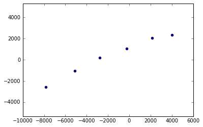
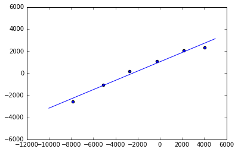
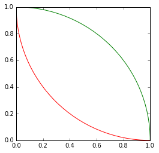
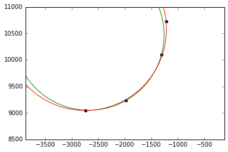
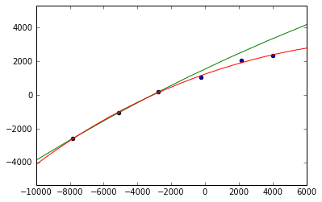
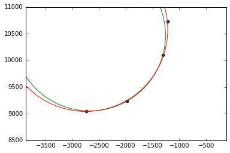

In [1]:
%matplotlib inline
import matplotlib
import numpy as np
import matplotlib.pyplot as plt
import scipy.optimize
import lmfit
from math import *
Circle Fitting Research¶
Introduction¶
This document is an exploration into the mathematics and algorithms of fitting lines and circles to a limited number of points which are a subset of an aircraft track.
Data¶
In [2]:
def plot_data(dataset):
x = []
y = []
for x_coord, y_coord in dataset:
x.append(x_coord)
y.append(y_coord)
plt.scatter(x, y)
data1¶
an aircraft travelling in more or less a straight line (perhaps with a slight curve)
In [3]:
data1 = [[-7823.439561574536, -2568.6287717351497],
[-5107.037760476856, -1043.730245427465],
[-2762.7301083133757, 190.28046761840392],
[-259.35055129732217, 1076.7365979969445],
[2135.210021244198, 2041.7607403979657],
[4013.295597771261, 2335.1731250977123]]
plot_data(data1)
plt.axes().set_aspect('equal', 'datalim')

Line Fitting¶
Scipy Line Fitting¶
This is a first foray into doing line fitting using minimization of perpendicular offsets using scipy’s minimization function.
In [5]:
def perpendicular_distance(m, c, point):
"""returns a positive if on the right side of the line
returns a negative if on the left side of the line"""
a = m
x1 = point[0]
y1 = point[1]
d = (a*x1 - y1 + c)/(sqrt(a*a + 1))
return d
def least_squares_distance(m, c, points):
distance_sum = 0
for point in points:
distance_sum += perpendicular_distance(m, c, point)**2
return distance_sum
def func(x, *args):
return least_squares_distance(x[0], x[1], args[0])
retval = scipy.optimize.minimize(func, [0,0], args=(data1))
m = retval.x[0]
c = retval.x[1]
plot_data(data1)
x = np.linspace(-10000, 5000)
y = []
for val in x:
y.append(val*m + c)
plt.plot(x, y)
plt.axes().set_aspect('equal', 'datalim')
# least_squares_distance(1, 1000, data1)

Circle Fitting¶
three point circle solver¶
In [6]:
class Circle:
def __init__(self, pos, radius):
self.pos = pos
self.radius = radius
@staticmethod
def from_three_points(p1, p2, p3):
dy1 = p2[1] - p1[1]
dx1 = p2[0] - p1[0]
dy2 = p3[1] - p2[1]
dx2 = p3[0] - p2[0]
slope1 = dy1/dx1
slope2 = dy2/dx2
x = (slope1*slope2*(p1[1] - p3[1]) + slope2*(p1[0] + p2[0]) - slope1*(p2[0] + p3[0]))/(2*(slope2-slope1))
y = -1*(x - (p1[0] + p2[0])/2)/slope1 + (p1[1] + p2[1])/2
x1 = x - p1[0]
y1 = y - p1[1]
r = sqrt(x1*x1 + y1*y1)
return Circle([x,y], r)
def get_plot(self, **kwargs):
return plt.Circle((self.pos[0], self.pos[1]), self.radius, **kwargs)
def __str__(self):
return "Circle([{0},{1}],{2})".format(self.pos[0], self.pos[1], self.radius)
def distance2(self, point):
return (sqrt((point[0] - self.pos[0])**2 + (point[1] - self.pos[1])**2) - self.radius)**2
c1 = Circle([1,1], 1)
c2 = Circle.from_three_points([-1, 0], [0, 1], [1, 0])
fig, ax = plt.subplots()
ax.add_artist(c1.get_plot(edgecolor="r", facecolor="none"))
ax.add_artist(c2.get_plot(edgecolor="g", facecolor="none"))
ax.set_aspect('equal')

Scipy Minimize Circle Fitting¶
The following two cells demonstrate using scipy’s minimize function to solve for circles using the conventional parameterization:
\[d_i = \sqrt{(x_i - a)^2 + (y_i - b)^2} - R\]
\[F = \sum_{i=1}^{n}d_i^2\]
Where F is the function we are trying to minimize.
In [7]:
def circle_ri(a, b, radius, points):
r_sum = 0
c = Circle([a, b], radius)
for point in points:
r_sum += c.distance2(point)
return r_sum
def func(x, *args):
return circle_ri(x[0], x[1], x[2], args[0])
c1 = Circle.from_three_points(data2[0], data2[1], data2[2])
retval = scipy.optimize.minimize(func, [c1.pos[0],c1.pos[1],c1.radius], args=(data2))
a = retval.x[0]
b = retval.x[1]
r = retval.x[2]
c2 = Circle([a,b], r)
plot_data(data2)
print("Guess(green):", c1)
print("Answer(red):", c2)
ax = plt.gca()
ax.add_artist(c1.get_plot(edgecolor="g", facecolor="none"))
ax.add_artist(c2.get_plot(edgecolor="r", facecolor="none"))
plt.axes().set_aspect('equal', 'datalim')
Guess(green): Circle([-2676.9263298024503,10469.756101355182],1419.3199745179995)
Answer(red): Circle([-2744.1154157915385,10576.023919859705],1530.7115839583885)

In [8]:
c1 = Circle.from_three_points(data1[0], data1[1], data1[2])
retval = scipy.optimize.minimize(func, [c1.pos[0],c1.pos[1],c1.radius], args=(data1))
a = retval.x[0]
b = retval.x[1]
r = retval.x[2]
c2 = Circle([a,b], r)
x = []
y = []
for x_coord, y_coord in data1:
x.append(x_coord)
y.append(y_coord)
plt.scatter(x, y)
print("Guess(green):", c1)
print("Answer(red):", c2)
ax = plt.gca()
ax.add_artist(c1.get_plot(edgecolor="g", facecolor="none"))
ax.add_artist(c2.get_plot(edgecolor="r", facecolor="none"))
plt.axes().set_aspect('equal', 'datalim')
Guess(green): Circle([45793.89384213992,-94898.80121838693],106769.28015751315)
Answer(red): Circle([12107.017055118396,-33336.20943681085],36638.49292318794)

SciPy Levenberg-Marquardt Least-Squares Circle Fitting¶
In [10]:
def circle_ri(a, b, radius, points):
residuals = []
c = Circle([a, b], radius)
for point in points:
residuals.append(c.distance2(point))
return residuals
def func(x, *args):
return circle_ri(x[0], x[1], x[2], args)
c1 = Circle.from_three_points(data1[0], data1[1], data1[2])
retval = scipy.optimize.least_squares(func, [c1.pos[0],c1.pos[1],c1.radius], args=(data1), method="lm")
a = retval.x[0]
b = retval.x[1]
r = retval.x[2]
c2 = Circle([a,b], r)
plot_data(data1)
print("Guess(green):", c1)
print("Answer(red):", c2)
ax = plt.gca()
ax.add_artist(c1.get_plot(edgecolor="g", facecolor="none"))
ax.add_artist(c2.get_plot(edgecolor="r", facecolor="none"))
plt.axes().set_aspect('equal', 'datalim')
Guess(green): Circle([45793.89384213992,-94898.80121838693],106769.28015751315)
Answer(red): Circle([12051.872411956107,-32914.71010089948],36234.900858877416)

In [11]:
c1 = Circle.from_three_points(data2[0], data2[1], data2[2])
retval = scipy.optimize.least_squares(func, [c1.pos[0],c1.pos[1],c1.radius], args=(data2), method="lm")
a = retval.x[0]
b = retval.x[1]
r = retval.x[2]
c2 = Circle([a,b], r)
plot_data(data2)
print("Guess(green):", c1)
print("Answer(red):", c2)
ax = plt.gca()
ax.add_artist(c1.get_plot(edgecolor="g", facecolor="none"))
ax.add_artist(c2.get_plot(edgecolor="r", facecolor="none"))
plt.axes().set_aspect('equal', 'datalim')
Guess(green): Circle([-2676.9263298024503,10469.756101355182],1419.3199745179995)
Answer(red): Circle([-2749.8969143634604,10575.118314312538],1533.689331374633)
